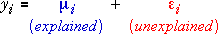

Mean residual sum of squares
All normal models can be expressed as:

where the error term has a normal distribution,
εi ∼ normal (0, σ)
In any model, the mean residual sum of squares is an estimate of the error variance, σ2. This is an important summary of the model since it quantifies the amount of variation that is unexplained by the controlled factors — the 'randomness' of the data.
The mean residual sum of squares therefore provides a baseline measure of variability against which the explained sums of squares can be compared (with F ratios) to assess their significance.
Replicates and residual degrees of freedom
Since the mean residual sum of squares is the denominator of all F ratios, the more accurate it is as an estimate of σ2, the more powerful the test. Since the accuracy of this estimate depends on the residual degrees of freedom, we ideally want a large number of residual degrees of freedom.
Replicates of the experiment — two or more response values at each combination of factor levels — are the best way to get a reasonable number of residual degrees of freedom.
Data with a single replicate
Unfortunately experiments are not always conducted with replication. There are often so many treatment combinations that it would be too expensive to repeat each two or more times.
The need to have residual degrees of freedom to perform hypothesis tests means that either:
Herbicide, insecticide and cotton growth
An agronomist conducted an experiment to determine the combined effects of a herbicide and an insecticide on the growth and development of cotton plants (delta pine smoothleaf). The insecticide and herbicide were incorporated into the soil used in the containers to grow the cotton plants. The response variable that was analysed was the mean dry weight of the roots (grams per plant) when 3 weeks old.
Although 20 cotton plants were used for each combination of five levels of herbicide and five levels of insecticide (both in units of lb/acre), only the mean response for each treatment combination was recorded. When analysing these mean root weights, there only a single replicate for each treatment.
Drag the red arrow to add terms for the two factors and an interaction. Since there are no replicates, the model with interaction fits the data perfectly, so all residuals are zero. The residual sum of squares and degrees of freedom are therefore zero and we cannot test the significance of the interaction.
Click the y-x button to rotate the diagram. Try to describe the interaction in words.
Finally drag the red arrow up to remove the interaction from the model. For these data, the no-interaction model does not fit well, but observe that this model does have residual degrees of freedom, so hypothesis tests for the main effects of insecticide and herbicide are technically possible.